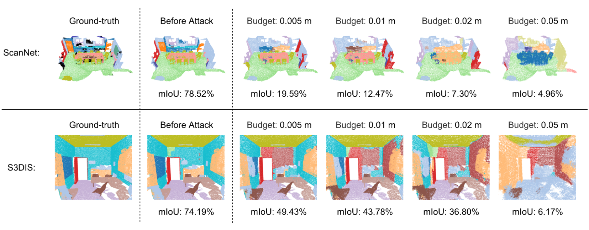
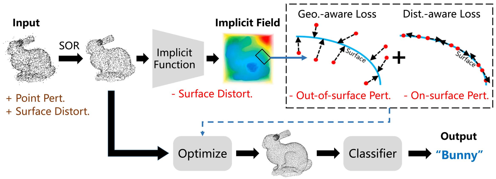
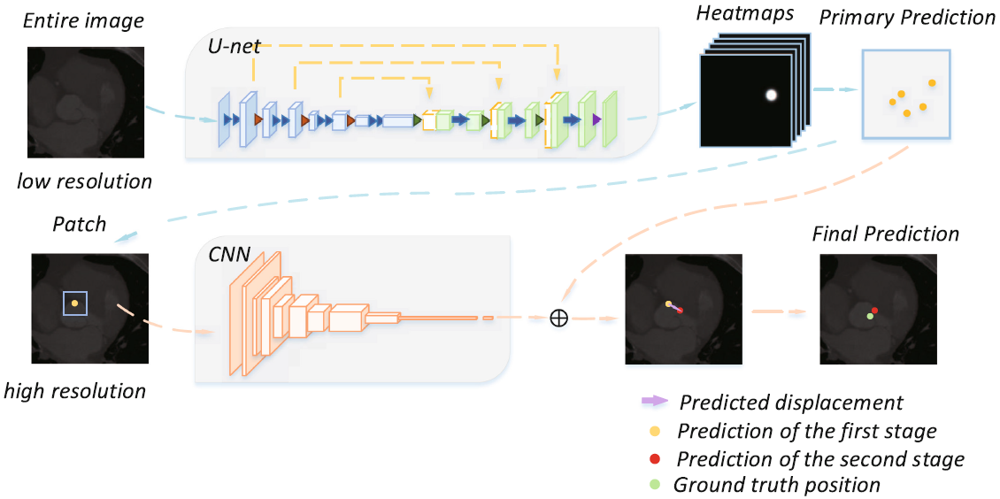
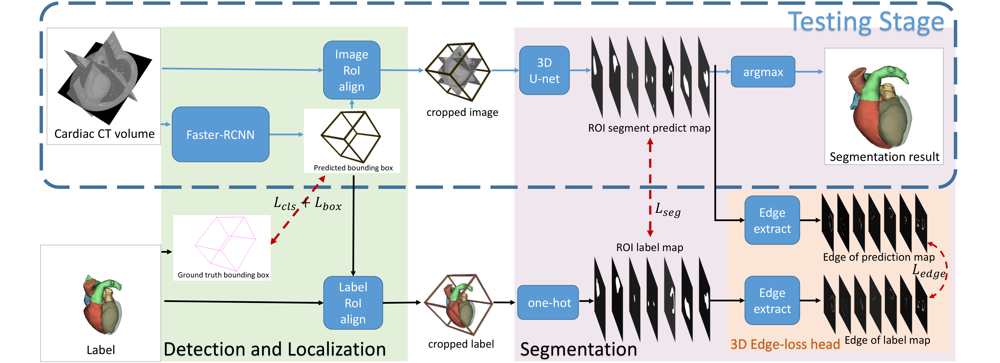

|
|
Ziyi Wu (吴紫屹)
Ph.D. Student University of Toronto Email: ziyiwu [at] cs.toronto.edu CV • Google Scholar • GitHub |

About
|
I am a first-year Ph.D. student in People, AI and Robotics (PAIR) group at University of Toronto, supervised by Prof. Animesh Garg and Prof. Andrea Tagliasacchi.
Before that, I received my Bachelor's degree from the Department of Automation, Tsinghua University, where I was fortunate to work Prof. Jiwen Lu.
I spent an unforgettable summer in 2020 doing internship at Stanford University, advised by Prof. Leonidas J. Guibas.
|
News
- NEW [July, 2021] One paper accepted by ICCV 2021!
- [June, 2021] I graduated with first-class honor from Tsinghua University.
- [Spring, 2021] Wonderful internship at SenseTime developing MMDetection3D:
mentored by Dr. Kai Chen and Wenwei Zhang.
- [January, 2021] One paper accepted by T-PAMI!
- [December, 2020] Invited talk about my research on 3D adversarial attack and defense in Prof. Raquel Urtasun's group.
- [December, 2020] I am awarded the SenseTime Scholarship 2020.
- [March, 2020] One paper accepted by CVPR 2020!
Research
|
Breaking Bad: A Dataset for Geometric Fracture and Reassembly |
 |
Dynamics-aware Adversarial Attack of 3D Sparse Convolution Network |
 |
IF-Defense: 3D Adversarial Point Cloud Defense via Implicit Function based Restoration |
|
Instance Similarity Learning for Unsupervised Feature Representation |
|
Learning Efficient Binarized Object Detectors with Information Compression |
|
BiDet: An Efficient Binarized Object Detector |
 |
A Cascade Regression Model for Anatomical Landmark Detection |
 |
CFUN: Combining Faster R-CNN and U-net Network for Efficient Whole Heart Segmentation |


Academic Services
|
Conference reviewer: CVPR'22; ECCV'22; NeurIPS'22; |
Teaching
|
Teaching Assistant, CSC 108: Introduction to Computer Programming21 Fall, 21-22 Winter |
Selected Awards
- Outstanding Graduates (Beijing, Tsinghua University & Dept. of Automation), 2021.
- SenseTime Undergraduate Scholarship for AI Research, 2020.
- Xiaomi Scholarship, Tsinghua University, 2020.
- Fang Chongzhi Scholarship, Tsinghua University, 2019.
- National Scholarship, Tsinghua University, 2018.
- Spark Program Membership, Tsinghua University.
- Innovation Award of Science and Technology, Tsinghua University, 2018-2020.
- Champion of the 20th Electronic Design Competition, Tsinghua University, 2018.
Miscellaneous
|
I like swimming and I am particularly good at freestyle. I also like basketball. My favorite player is LeBron James.
|
Ziyi Wu Last updated: June.13, 2022